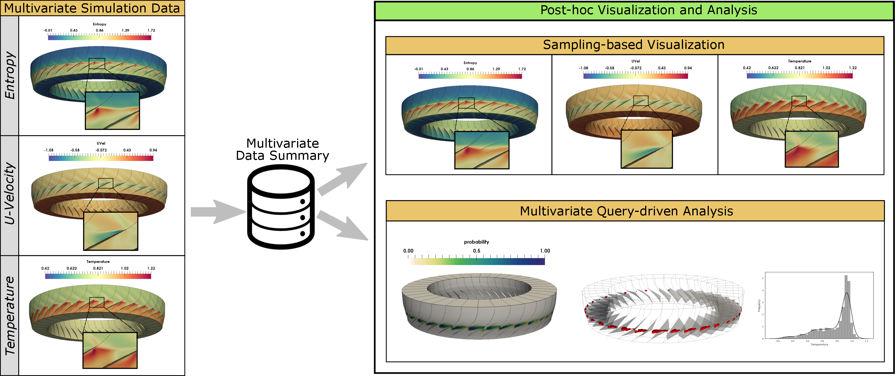
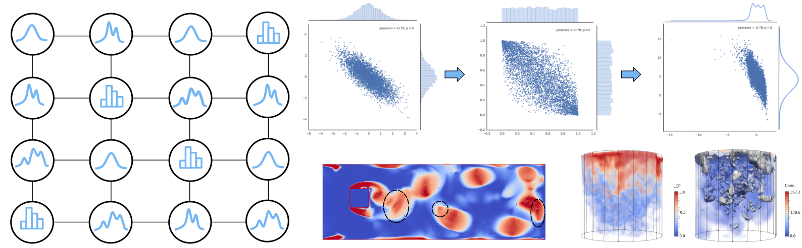
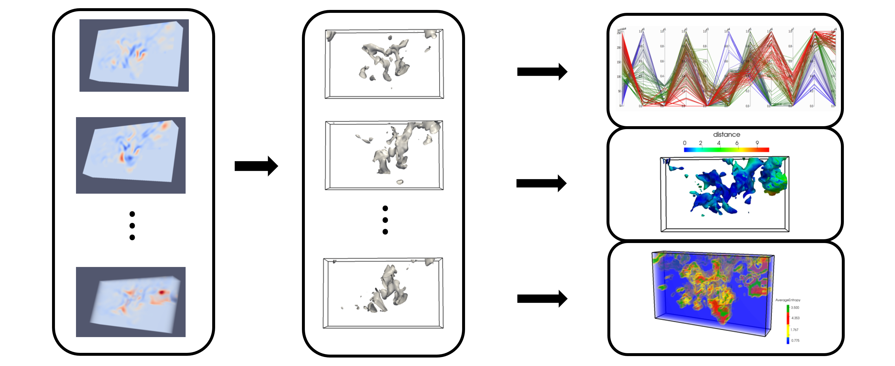
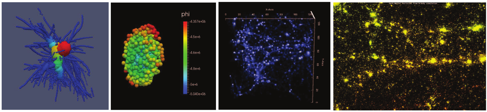
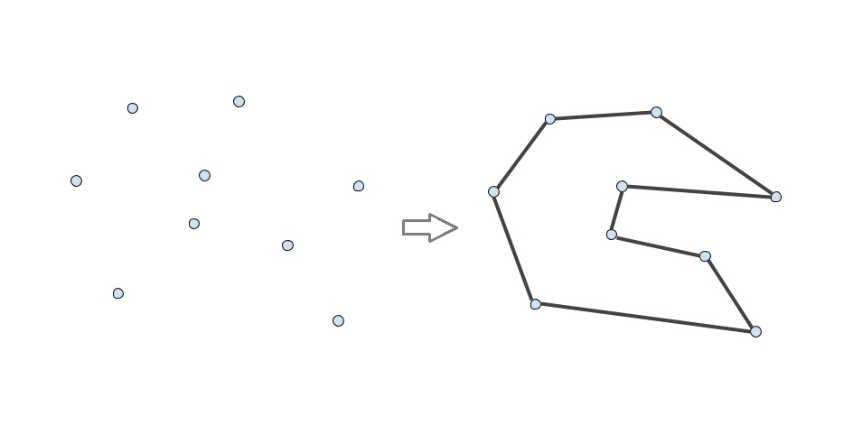

1. CoDDA: A Flexible Copula-based Distribution Driven Analysis Framework for Large-Scale Multivariate Data

Abstract:CoDDA ( Copula-based Distribution Driven Analysis) is a flexible framework for large-scale multivariate datasets. A common strategy to deal with large-scale scientific simulation data is to partition the simulation domain and create statistical data summaries. Instead of storing the high-resolution raw data from the simulation, storing the compact statistical data summaries results in reduced storage overhead and alleviated I/O bottleneck. Such summaries, often represented in the form of statistical probability distributions, can serve various post-hoc analysis and visualization tasks. However, for multivariate simulation data using standard multivariate distributions for creating data summaries is not feasible. They are either storage inefficient or are computationally expensive to be estimated in simulation time (in situ) for large number of variables. In this work, using copula functions, we propose a flexible multivariate distribution-based data modeling and analysis framework that offers significant data reduction and can be used in an in situ environment. The framework also facilitates in storing the associated spatial information along with the multivariate distributions in an efficient representation. Using the proposed multivariate data summaries, we perform various multivariate post-hoc analyses like query-driven visualization and sampling-based visualization. We evaluate our proposed method on multiple real-world multivariate scientific datasets. To demonstrate the efficacy of our framework in an in situ environment, we apply it on a large-scale flow simulation.
Paper: S.Hazarika, S.Dutta, H-W.Shen, J-P.Chen: “CoDDA: A Flexible Copula-based Distribution Driven Analysis Framework for Large-Scale Multivariate Data”, IEEE Transactions on Visualization and Computer Graphics, 2018. [bib,pdf] [J] (Status: Accepted @ SciVis 2018)
2. Uncertainty Visualization Using Copula-Based Analysis in Mixed Distribution Models

Abstract:Distributions are often used to model uncertainty in many scientific datasets. To preserve the correlation among the spatially sampled grid locations in the dataset, various standard multivariate distribution models have been proposed in visualization literature. These models treat each grid location as a univariate random variable which models the uncertainty at that location. Standard multivariate distributions (both parametric and nonparametric) assume that all the univariate marginals are of the same type/family of distribution. But in reality, different grid locations show different statistical behavior which may not be modeled best by the same type of distribution. In this paper, we propose a new multivariate uncertainty modeling strategy to address the needs of uncertainty modeling in scientific datasets. Our proposed method is based on a statistically sound multivariate technique called Copula, which makes it possible to separate the process of estimating the univariate marginals and the process of modeling dependency, unlike the standard multivariate distributions. The modeling flexibility offered by our proposed method makes it possible to design distribution fields which can have different types of distribution (Gaussian, Histogram, KDE etc.) at the grid locations, while maintaining the correlation structure at the same time. Depending on the results of various standard statistical tests, we can choose an optimal distribution representation at each location, resulting in a more cost efficient modeling without significantly sacrificing on the analysis quality. To demonstrate the efficacy of our proposed modeling strategy, we extract and visualize uncertain features like isocontours and vortices in various real world datasets. We also study various modeling criterion to help users in the task of univariate model selection.
Paper: S.Hazarika, A. Biswas, H-W. Shen: “Uncertainty Visualization Using Copula-Based Analysis in Mixed Distribution Models”, IEEE Transactions on Visualization and Computer Graphics , 24(1): 934-943 (2018) . [bib,pdf,preview,presentation]
3. Visualization and Visual Analysis of Ensemble Data: A Survey

Abstract:Over the last decade, ensemble visualization has witnessed a significant development due to the wide availability of ensemble data, and the increasing visualization needs from a variety of disciplines. From the data analysis point of view, it can be observed that many ensemble visualization works focus on the same facet of ensemble data, use similar data aggregation or uncertainty modeling methods. However, the lack of reflections on those essential commonalities and a systematic overview of those works prevents visualization researchers from effectively identifying new or unsolved problems and planning for further developments. In this paper, we take a holistic perspective and provide a survey of ensemble visualization. Specifically, we study ensemble visualization works in the recent decade, and categorize them from two perspectives: (1) their proposed visualization techniques; and (2) their involved analytic tasks. For the first perspective, we focus on elaborating how conventional visualization techniques (e.g., surface, volume visualization techniques) have been adapted to ensemble data; for the second perspective, we emphasize how analytic tasks (e.g., comparison, clustering) have been performed differently for ensemble data. From the study of ensemble visualization literature, we have also identified several research trends, as well as some future research opportunities.
Paper: J. Wang, S.Hazarika, C. Li, H-W. Shen: “Visualization and Visual Analysis of Ensemble Data: A Survey”, IEEE Transactions on Visualization and Computer Graphics (accepted), 2018 . [bib,pdf]
4. Visualizing the Variations of Ensemble of Isosurfaces

Abstract:Visualizing the similarities and differences among an ensemble of isosurfaces is a challenging problem mainly because the isosurfaces cannot be displayed together at the same time. For ensemble of isosurfaces, visualizing these spatial differences among the surfaces is essential to get useful insights as to how the individual ensemble simulations affect different isosurfaces. We propose a scheme to visualize the spatial variations of isosurfaces with respect to statistically significant isosurfaces within the ensemble. Understanding such variations among ensemble of isosurfaces at different spatial regions is helpful in analyzing the influence of different ensemble runs over the spatial domain. In this regard, we propose an isosurface-entropy based clustering scheme to divide the spatial domain into regions of high and low isosurface variation. We demonstrate the efficacy of our method by successfully applying it on real-world ensemble data sets from ocean simulation experiments and weather forecasts.
Paper: S.Hazarika, S.Dutta, H-W.Shen: “Visualizing the Variations of Ensemble of Isosurfaces”, Pacific Visualization Symposium (PacificVis), 2016 IEEE, Page 209-213. [bib,pdf]
5. Visualizing the Life and Anatomy of Dark Matter

Abstract:We provide a visualization based answer to understanding the evolution and structure of dark matter halos by addressing the tasks assigned in 2015 IEEE Scientific Visualization Contest. The data released this year is a Cosmological Simulation dataset generated from the Dark Sky Simulation experiments. Out of the assigned tasks we are addressing the following: data integration and browsing, halo identification and visualization and diving deep into halo substructure.
Paper: S.Hazarika, T-H.Wei, R.Mukherjee, A.Barbur: “Visualizing the Life and Anatomy of Dark Matter”, 2015 IEEE Scientific Visualization(SciVis), 101-106. [bib,pdf,video]
6. GRP-CH Heuristic for Generating Random Simple Polygon

Abstract:A heuristic ‘GRP_CH’ has been proposed to generate a random simple polygon from a given set of ‘n’ points in 2-Dimensional plane. The “2-Opt Move” heuristic with time complexity O(n^4) is the best known among the existing heuristics to generate a simple polygon. The proposed heuristics, ‘GRP_CH’ first computes the convex hull of the point set and then generates a random simple polygon from that convex hull. The ‘GRP_CH’ heuristic takes O(n^3) time which is less than that of “2-opt Move” heuristic. We have compared our results with “2-Opt Move” and it shows that the randomness behaviour of ‘GRP_CH’ heuristic is better than that of “2-Opt Move” heuristic.
Paper: S.Sadhu, S.Hazarika, K.Jain, S.Basu, T.De : “GRP-CH Heuristic for Generating Random Simple Polygon”, 23rd International Workshop on Combinatorial Algorithms 2012, 293-302, Springer LNCS Volume. [bib,pdf]